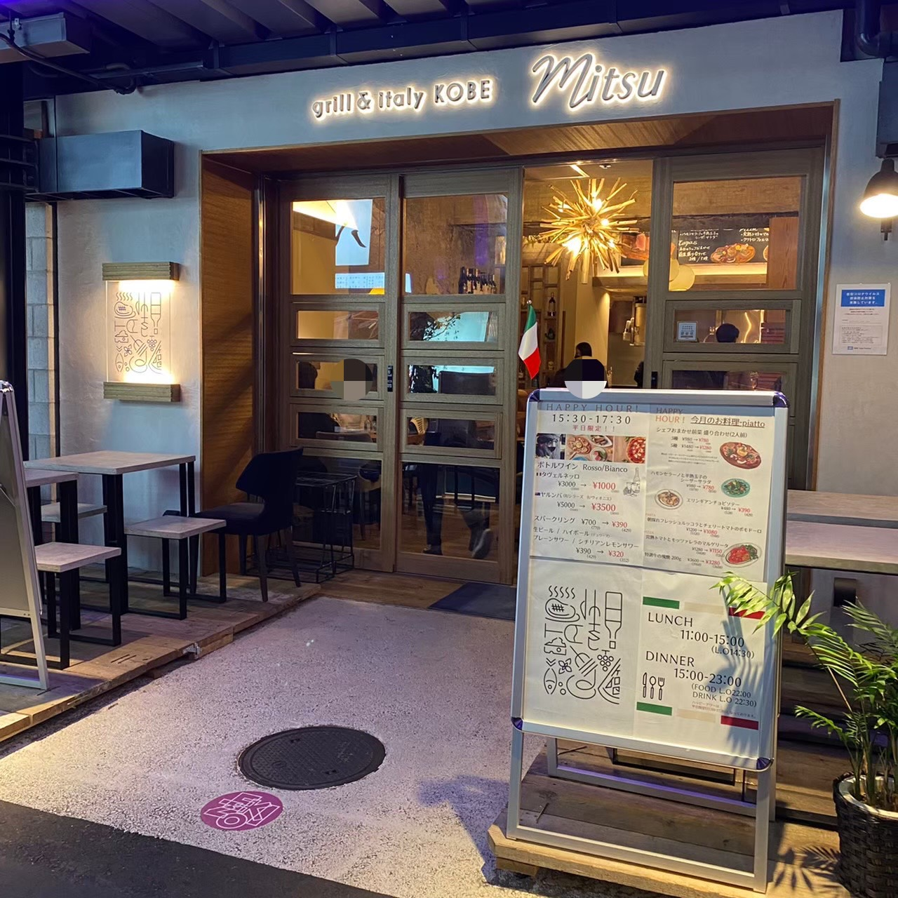

Restaurant
『igrek VEGA (イグレックベガ)』
営業時間
11：00~14：30
17：30~20：00
Access
神戸市中央区元町通1丁目7-1
VEGAビル 6Fにて
078-334-1909
神戸元町のリフォームな空間で、窓も大きく開放感に溢れた店内。
神戸の街並みを眺めながら様々なシーンで季節の食材を使ったランチディナーが楽しめる
人気の定番料理に加え、常に新しい料理を提案。コースのデザートプレートが人気。
公式サイト
『grill×italy KOBE Mitsu』
- 
営業時間
11：00~14：59
15：00~23：00
Access
神戸市中央区加納町4丁目2-114
14番EKIZO神戸三宮にて
078-862-6499
オムバーグで有名なお店。ランチ時間はオムバーグやハンバーグ、
オムライスのお得なセットが楽しめるのですが、ディナー時間が特におすすめ。
創作イタリアンが豊富にあり、見た目にも味にも驚かされる。
公式サイト
nomadika (ノマディカ)
営業時間
11：30~22：00
ラストオーダー
21：00
Access
神戸市中央区北長挟通３丁目9-10
青柳ビル 1Fにて
078-333-6680
気さくに愉しめる普段使いのビストロ料理とソムリエ厳選ワインのお店。
低コストで様々な季節フレンチが堪能できる。
誕生日や記念日などのお祝いにもぴったり。
公式サイト
Pizzeria Azzurri

営業時間
12：00~15：00
17：30~22：00
Access
神戸市中央区山本通三丁目7-3
1F ユートピアトーアにて
078-241-6036
ヴィッセル神戸の選手御用達の有名店。
名物はピザで、食べログでもピザ百名店4年連続受賞中。
予約必須のイタリア料理店です。
公式サイト
ISOGAMI 餃子バル TOMAKO
平日
11：00~22：00
金土日
11：00~22：30
Access
神戸市中央区磯上通8丁目1-29にて
078-230-1330